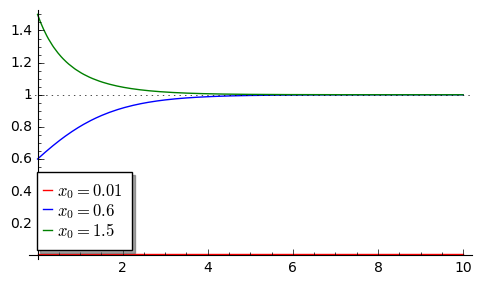

[1]:
var('x1, x2, x3, t')
colors = ['red','blue']
x1 = 0.01*exp(t)/(1+exp(t)-1)
x2 = 0.6*exp(t)/(1+0.6*(exp(t)-1))
x3 = 1.5*exp(t)/(1+1.5*(exp(t)-1))
p10 = plot(x1,(t,0,10),figsize=(5,3),color='red', legend_label="$x_0=0.01$")
p30 = plot(x3,(t,0,10),color='green',legend_label="$x_0=1.5$",gridlines=[[],[1]])
show(p10+p20+p30)

[2]:
from sage.plot.colors import rainbow,
[25]:
type(sage.plot.colors??
[ ]:
type(sage.plot.colors
[8]:
sage.plot.colors.six.
[8]:
<module 'six' from '/Applications/SageMath/local/lib/python2.7/site-packages/six.pyc'>
[26]:
nice_colors = (
0xe6194b, 0x3cb44b, 0xffe119, 0x0082c8,
0xf58231, 0x911eb4, 0x46f0f0, 0xf032e6,
0xd2f53c, 0xfabebe, 0x008080, 0xe6beff,
0xaa6e28, 0xfffac8, 0x800000, 0xaaffc3,
0x808000, 0xffd8b1, 0x000080, 0x808080,
0xFFFFFF, 0x000000
)
[29]:
sum([plot(sin(x+i),(x,0,10),color=c) for i,c in enumerate(nice_colors)]).show()
---------------------------------------------------------------------------
TypeError Traceback (most recent call last)
<ipython-input-29-c5c46e4558dc> in <module>()
----> 1 sum([plot(sin(x+i),(x,Integer(0),Integer(10)),color=c) for i,c in enumerate(nice_colors)]).show()
/Applications/SageMath/local/lib/python2.7/site-packages/sage/misc/decorators.pyc in wrapper(*args, **kwds)
481 kwds[self.name + "options"] = suboptions
482
--> 483 return func(*args, **kwds)
484
485 #Add the options specified by @options to the signature of the wrapped
/Applications/SageMath/local/lib/python2.7/site-packages/sage/plot/graphics.pyc in show(self, **kwds)
1985 from sage.repl.rich_output import get_display_manager
1986 dm = get_display_manager()
-> 1987 dm.display_immediately(self, **kwds)
1988
1989 def xmin(self, xmin=None):
/Applications/SageMath/local/lib/python2.7/site-packages/sage/repl/rich_output/display_manager.pyc in display_immediately(self, obj, **rich_repr_kwds)
831 1/2
832 """
--> 833 plain_text, rich_output = self._rich_output_formatter(obj, rich_repr_kwds)
834 self._backend.display_immediately(plain_text, rich_output)
835
/Applications/SageMath/local/lib/python2.7/site-packages/sage/repl/rich_output/display_manager.pyc in _rich_output_formatter(self, obj, rich_repr_kwds)
621 has_rich_repr = isinstance(obj, SageObject) and hasattr(obj, '_rich_repr_')
622 if has_rich_repr:
--> 623 rich_output = self._call_rich_repr(obj, rich_repr_kwds)
624 if isinstance(rich_output, OutputPlainText):
625 plain_text = rich_output
/Applications/SageMath/local/lib/python2.7/site-packages/sage/repl/rich_output/display_manager.pyc in _call_rich_repr(self, obj, rich_repr_kwds)
579 if rich_repr_kwds:
580 # do not ignore errors from invalid options
--> 581 return obj._rich_repr_(self, **rich_repr_kwds)
582 try:
583 return obj._rich_repr_(self)
/Applications/SageMath/local/lib/python2.7/site-packages/sage/plot/graphics.pyc in _rich_repr_(self, display_manager, **kwds)
882 if output_container in display_manager.supported_output():
883 return display_manager.graphics_from_save(
--> 884 self.save, kwds, file_ext, output_container)
885
886 def __str__(self):
/Applications/SageMath/local/lib/python2.7/site-packages/sage/repl/rich_output/display_manager.pyc in graphics_from_save(self, save_function, save_kwds, file_extension, output_container, figsize, dpi)
709 if dpi is not None:
710 kwds['dpi'] = dpi
--> 711 save_function(filename, **kwds)
712 from sage.repl.rich_output.buffer import OutputBuffer
713 buf = OutputBuffer.from_file(filename)
/Applications/SageMath/local/lib/python2.7/site-packages/sage/misc/decorators.pyc in wrapper(*args, **kwds)
481 kwds[self.name + "options"] = suboptions
482
--> 483 return func(*args, **kwds)
484
485 #Add the options specified by @options to the signature of the wrapped
/Applications/SageMath/local/lib/python2.7/site-packages/sage/plot/graphics.pyc in save(self, filename, **kwds)
3151 rc_backup = (rcParams['ps.useafm'], rcParams['pdf.use14corefonts'],
3152 rcParams['text.usetex']) # save the rcParams
-> 3153 figure = self.matplotlib(**options)
3154 # You can output in PNG, PS, EPS, PDF, PGF, or SVG format, depending
3155 # on the file extension.
/Applications/SageMath/local/lib/python2.7/site-packages/sage/plot/graphics.pyc in matplotlib(self, filename, xmin, xmax, ymin, ymax, figsize, figure, sub, axes, axes_labels, axes_labels_size, fontsize, frame, verify, aspect_ratio, gridlines, gridlinesstyle, vgridlinesstyle, hgridlinesstyle, show_legend, legend_options, axes_pad, ticks_integer, tick_formatter, ticks, title, title_pos, base, scale, stylesheet, typeset)
2602 pass
2603 g.set_options(opts)
-> 2604 g._render_on_subplot(subplot)
2605 if hasattr(g, '_bbox_extra_artists'):
2606 self._bbox_extra_artists.extend(g._bbox_extra_artists)
/Applications/SageMath/local/lib/python2.7/site-packages/sage/plot/line.pyc in _render_on_subplot(self, subplot)
255 p.set_alpha(a)
256 p.set_linewidth(float(options['thickness']))
--> 257 p.set_color(to_mpl_color(options['rgbcolor']))
258 p.set_label(options['legend_label'])
259 # we don't pass linestyle in directly since the drawstyles aren't
/Applications/SageMath/local/lib/python2.7/site-packages/sage/plot/colors.pyc in rgbcolor(c, space)
364 raise ValueError("space must be one of 'rgb', 'hsv', 'hsl', 'hls'")
365
--> 366 raise TypeError("'%s' must be a Color, list, tuple, or string" % c)
367
368
TypeError: '15079755' must be a Color, list, tuple, or string
[30]:
rainbow(1)
[30]:
['#ff0000']
[ ]: